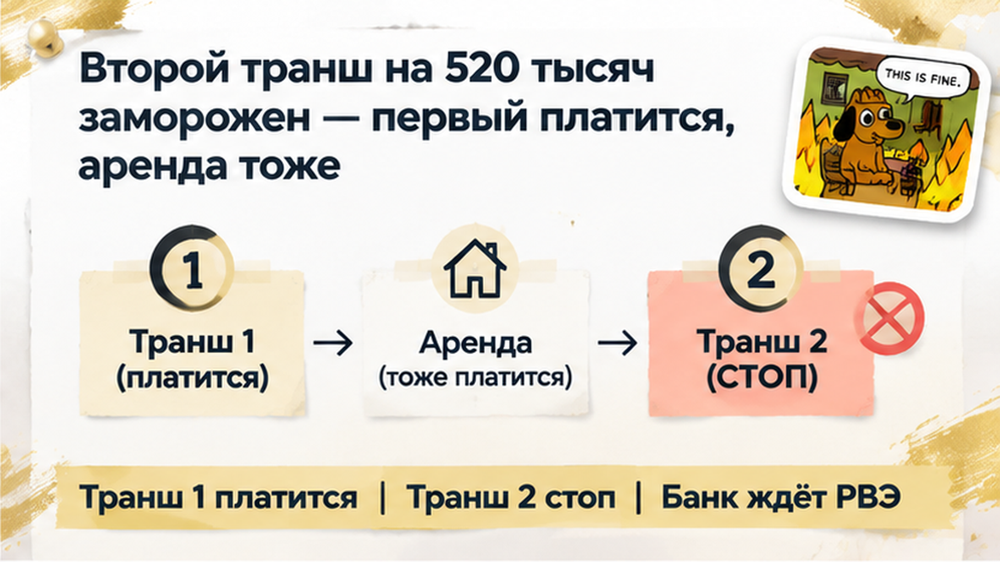
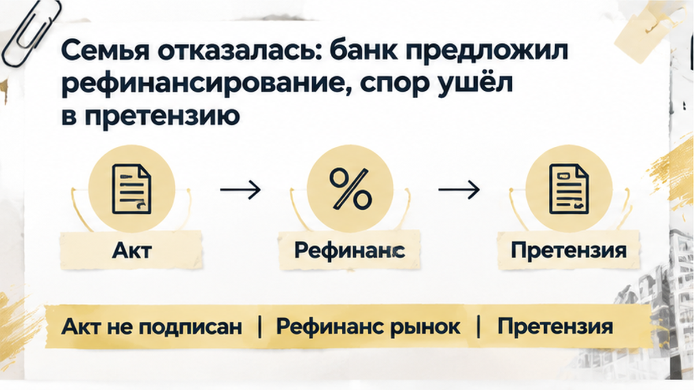
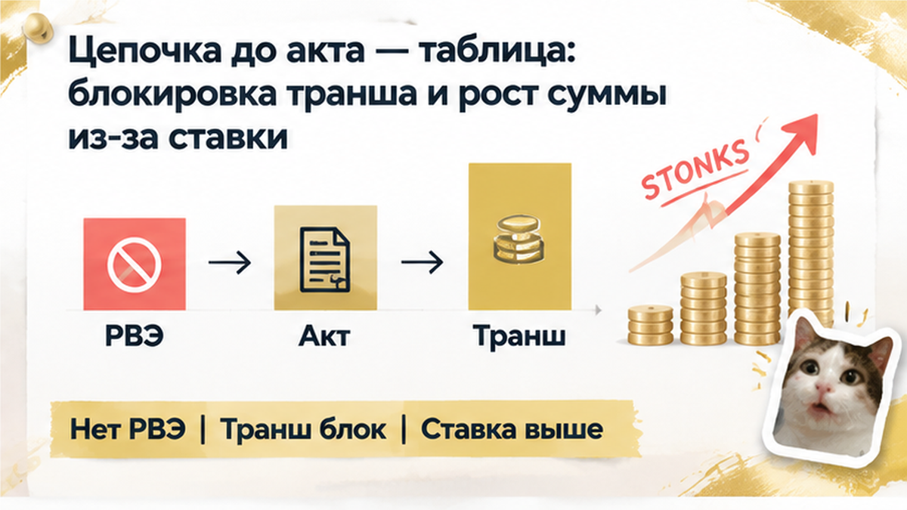

В Тюмени новостройку «сдали» на словах, но банк не выдал второй транш примерно на 520 тысяч рублей — и покупатель остался между платежом по первому траншу и арендой. В коридоре нового дома он открывает на смартфоне наш.дом.рф: отметка о разрешении на ввод так и не появляется уже около пяти месяцев после заявленной готовности. «Мы же уже были на осмотре», — говорит обычный покупатель, пытаясь понять, почему это не считается передачей квартиры. А срок одобрения по ипотеке подходит к концу. Для вас ключи для ремонта — это уже готовое жильё или только обещание?
Я разбираю такие ситуации спокойно и по шагам — без паники и красивых обещаний. Подписывайтесь на мой Telegram и канал в MAX.
Святослав Шакин, The Риэлтор, Тюмень.
В траншевой ипотеке деньги уходят не одним платежом. Первый транш уже выдан, по нему идут платежи. Но второй банк не перечисляет автоматически только потому, что застройщик объявил о готовности корпуса.
Нужно разрешение на ввод — РВЭ. Это документ, который подтверждает: объект можно вводить в эксплуатацию. Пока его нет в реестре, для банка остаётся незакрытым важный этап.
Покупатель видит готовый подъезд, стены и квартиру. Можно прийти на осмотр, принять замечания, получить ключи для ремонта. Но осмотр сам по себе не превращает объект в переданный по всем правилам и не запускает второй транш.
Вот где обычный взгляд расходится с профессиональным. Обычный покупатель думает: «Дом стоит — значит, всё закончилось». Профи сначала проверяет документ и только потом связывает его с условиями ДДУ и ипотеки. Похожую историю с переносом ключей и заморозкой денег на эскроу я разбирал в материале о ключах от новостройки в Тюмени и деньгах на эскроу.
Проверка начинается не с разговора в офисе продаж, а с реестра. На наш.дом.рф можно посмотреть, появился ли объект и его разрешение на ввод в той форме, которая нужна для проверки.
В этой ситуации после сообщения о готовности прошло около пяти месяцев, а РВЭ в реестре не появилось. Для покупателя это не абстрактная задержка: первый транш продолжает списываться, аренду никто не отменял, а второй транш примерно на 520 тысяч рублей банк не выдал.
Есть и ещё одна тонкость. С 01.09.2026 планируется переход на реестровую форму разрешения на ввод. Поэтому важно смотреть не на фразу «документы оформляются», а на то, какой документ и где отражён в реестре.
Ключи для ремонта тоже не равны передаче квартиры. В них можно зайти, сделать замеры и начать отделку, но для банка и покупателя решающим остаётся документальный статус объекта. Проверили реестр — поняли, какой этап действительно закрыт.

У траншевой ипотеки есть особенность, которую легко пропустить за разговором о небольшом первом платеже: банк выдаёт кредит частями, а не сразу целиком. Следующая часть приходит не просто по просьбе покупателя. В договоре прописано, что должно произойти до её выдачи, и здесь нужны были ввод дома и дальнейшая регистрация права. Пока этого нет, согласованная сумма остаётся на бумаге.
Первую часть семья уже получила при оформлении ДДУ — договора покупки квартиры у застройщика. Платежи по ней шли своим чередом, хозяину съёмного жилья тоже нужно было платить. А переехать и убрать аренду из семейных расходов не получалось: нормальная передача квартиры ещё не состоялась. Получилась неприятная развилка — обязательства покупателя уже работают, а получить жильё он пока не может.
За одиннадцать дней до окончания срока ипотечного одобрения банк письменно отказал в выдаче остатка. Это была не внезапная прибавка к ставке и не пересчёт стоимости квартиры. Не выполнилось условие выдачи, а времени на его выполнение почти не осталось. После окончания одобрения новое решение могли предложить уже по рыночной ставке.
Покупатель смотрит на ситуацию так: «Кредит одобрили, дом построили — что ещё мешает?» Я в такой точке смотрю не на обещанную дату ключей, а на пункт кредитного договора. Что именно открывает выдачу: разрешение на ввод, зарегистрированное право, оформление залога или весь комплект вместе? Слова похожи на формальность ровно до того момента, пока от них не начинает зависеть семейный бюджет.
Поэтому семья запросила у банка письменное объяснение: какого документа не хватает и что будет после окончания одобрения. Ответ «ждите разрешение» не объясняет, сохранятся ли прежние условия и понадобится ли новая заявка. Тут важно получить не успокоение по телефону, а понятную позицию банка. Иначе можно ждать один документ, а потом обнаружить, что срок другого уже вышел.
На этом фоне предложение застройщика выглядело выходом: осмотреть квартиру и оформить передачу с замечаниями. Подъезд отделан, в помещение можно зайти, задержку документов называют технической. Очень хочется поверить, что осталось расписаться и дело сдвинется. Особенно когда за ожидание каждый месяц платишь из своего кармана.
Но в предложении «подпишите акт с замечаниями» смешались две разные проблемы. Замечания к квартире — это недоделки, которые фиксируют при осмотре. Отсутствие разрешения на ввод — другое: без него квартиру по ДДУ передавать нельзя. Приписка рядом с подписью не выдаёт дому разрешение и не делает комплект документов подходящим для банка.
Сам осмотр не требовал закрывать глаза на документы. Можно было посмотреть квартиру, сфотографировать дефекты и составить перечень недоделок. Но ключи «для ремонта» — ещё не законная передача, а доступ в помещение — не подтверждение выполнения банковских условий. Здесь важно не дать понятному желанию скорее зайти в свою квартиру превратиться в подпись под совсем другим действием.
Обещание «после ключей банк всё выдаст» тоже нужно сверять с кредитным договором, а не принимать на веру. Похожий разрыв между одобрением и следующим действием есть в истории, где семейную ипотеку одобрили, но эскроу не открыли. Для покупателя всё выглядит одной покупкой, а у каждого участника свои условия. И подпись покупателя не заменяет документ, который должен получить застройщик.

Семья акт не подписала. Не отказалась от квартиры, не расторгла ДДУ — остановилась перед подписью, которая не решала проблему с вводом. Надпись «с замечаниями» годится для разговора о недоделках, но отсутствующее разрешение от неё не появляется. И обещание ключей не становится документом для банка.
Банк предложил другой выход: рефинансирование по рыночной ставке. Звучит как способ наконец сдвинуть дело, только это уже новый кредитный договор с другими условиями. Прежде чем соглашаться, семье предстояло сравнить не одну красивую цифру ежемесячного платежа, а срок и общую переплату. Чужая задержка не должна незаметно превратиться в согласие покупателя на любой новый кредит.
Здесь важно не перепутать причину и возможное последствие. Действующую ставку банк не повышал: он отказал в выдаче следующей части денег из-за невыполненного условия. Рыночная ставка появилась уже в предложении рефинансирования. В истории, где банк изменил цену кредита накануне ДДУ, сделку остановили по другой причине — внешне похожие неприятности требуют разных решений.
Застройщику направили претензию: разрешения нет, нормальная передача не состоялась, задержка бьёт по семейному бюджету. У банка запросили письменное основание отказа и последствия окончания срока одобрения. На этом этапе ключи семья не получила, ДДУ продолжал действовать, спор перешёл в претензию. Ни выплаты компенсации, ни решения суда в этой истории пока нет — приписывать им победу было бы нечестно.
Застройщик зовёт на ключи, а РВЭ в реестре нет уже пятый месяц: подписали бы акт «с замечаниями» ради второго транша или ждали бы разрешение, даже если ипотека «сгорает»?

Для покупателя всё это звучит одинаково: «С ипотекой опять проблема». Но я бы сначала разделил две вещи — деньги стали дороже или банк пока не может их перечислить по условиям договора. Иначе можно обсуждать новый платёж, когда первый вопрос надо задавать о недостающем документе.
| Что случилось | Что это означает | На что нельзя рассчитывать |
|---|---|---|
| Нет разрешения, необходимого для выдачи транша | Согласованная часть кредита остаётся невыданной | Приглашение на ключи не заменит условие банка |
| В новом предложении выше ставка | Могут вырасти платёж и переплата | Это не продолжение прежнего кредита на прежних условиях |
| Разрешение появилось, но другие условия не закрыты | Могут понадобиться регистрация права и документы по залогу | Деньги не обязательно придут сразу после ввода |
| Заканчивается срок одобрения | Может потребоваться новое решение банка | Автоматическое продление никто не обещал |
Практика здесь помещается в один разговор с открытыми документами. В карточке нужного корпуса на наш.дом.рф сверяем сведения о вводе, в кредитном договоре — событие для выдачи остатка и предельный срок. Затем просим банк письменно назвать недостающие документы. Не «менеджер сказал, что всё пройдёт», а понятный ответ, с которым можно решать, что подписывать дальше.
В Telegram и MAX разбираю такие развилки без банковского тумана. Если приёмка уже назначена, а с условиями транша ясности нет, лучше обсудить документы до встречи с актом на столе.
Остановка перед подписью не убрала аренду и не вернула семье спокойствие одним движением. Зато к задержке не добавился акт, которым попытались бы заменить отсутствующее разрешение. Это не счастливый финал — это сохранённая возможность разбираться с документами, не соглашаясь на предложенный обходной путь.
Готовая квартира может нравиться, а предложенный порядок передачи — не подходить. Одно не отменяет другого. Покупатель вправе отделить осмотр от подписи и сначала понять, какой документ действительно позволит продолжить сделку.